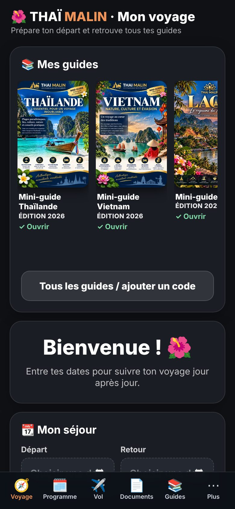
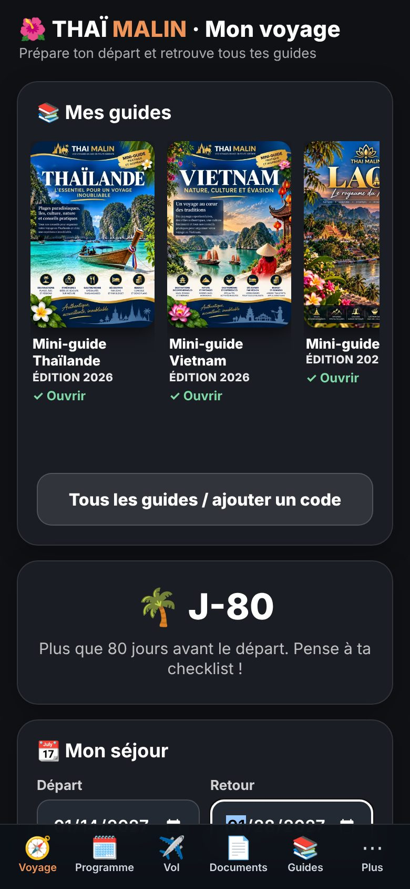
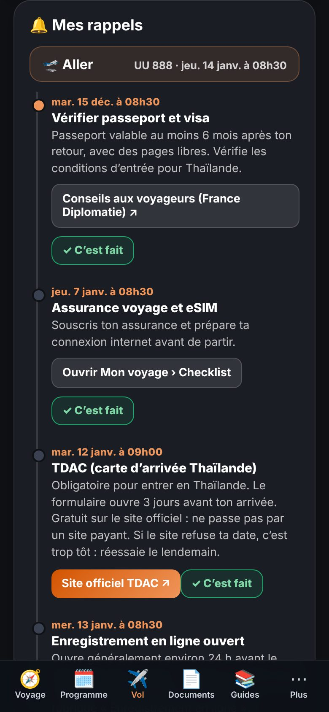
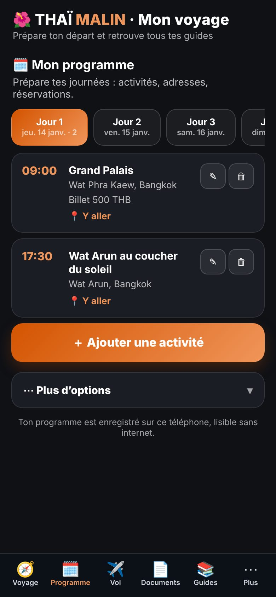
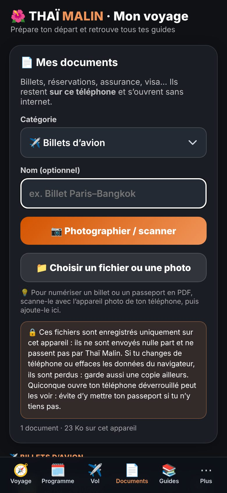
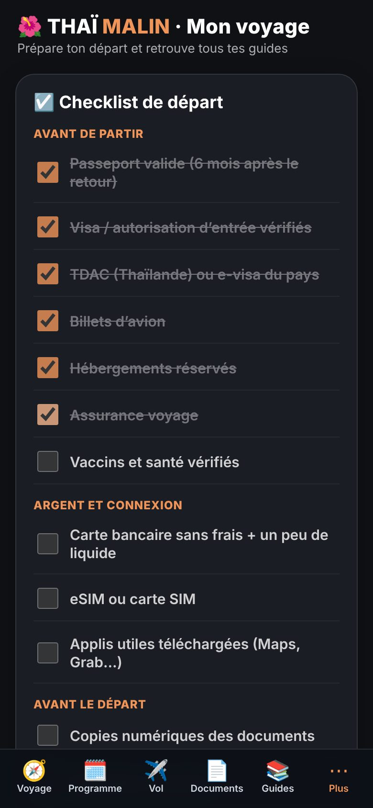
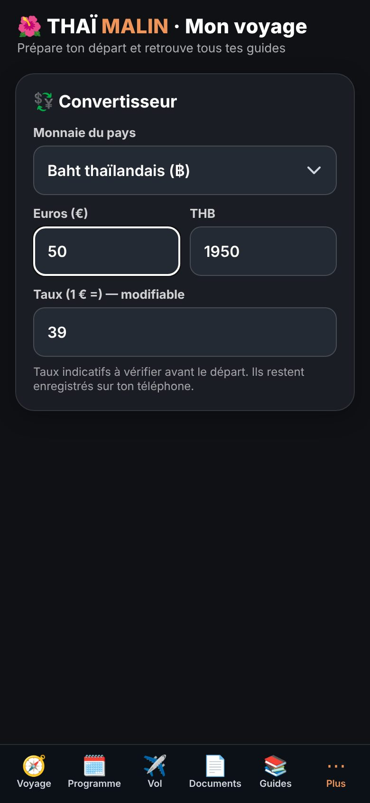

Édition 2026 · 23 pages
🌴 Mini-guide Thaïlande
Bangkok, Chiang Mai, les îles — pensé pour les Réunionnais
4,99 €
Des mini-guides clairs, des codes par e-mail, et un hub « Mon voyage » pour ranger tes dates, ton vol, ton programme et tes billets. Feuillette 3 pages gratuites de chaque guide avant d’acheter.
Quelqu’un entre son code, ses dates, son vol, son programme… jusqu’au mode hors ligne.
Trois étapes, tout se passe sur ton téléphone.
Feuillette 3 pages gratuites de chaque guide pour voir si le style et le contenu te conviennent.
Après le paiement sécurisé Stripe, ton code d’accès arrive automatiquement par e-mail.
Entre ton code, installe l’appli sur ton écran d’accueil : ton guide et ton voyage restent disponibles hors ligne.
Chaque guide est une édition 2026. Touche « Voir 3 pages gratuites » pour l’aperçu.
Bangkok, Chiang Mai, les îles — pensé pour les Réunionnais

Hanoï, Hội An, Saïgon — nature, culture et évasion

Luang Prabang, Vientiane, le royaume du Mékong

Angkor, Phnom Penh, plages et rencontres authentiques

Les plus belles plages, île par île
Une appli web incluse avec ton achat, qui range tout ton voyage au même endroit. Fais défiler :

Mes guidesTous tes guides au même endroit

Tes datesCompte à rebours jusqu’au départ

Ton volRappels créés automatiquement

Ton programmeJour par jour, avec adresses et horaires

Tes documentsBillets et réservations, même sans internet

Ta checklistÀ cocher avant de partir

ConvertisseurEuros en monnaie locale, hors ligne
Facultatif, mais pratique : l’appli s’ouvre comme une vraie appli et marche hors ligne.
Juste après le paiement, un e-mail automatique t’envoie ton code et le lien d’accès. Pense à regarder tes courriers indésirables.
Une fois entré sur ton téléphone, l’accès reste ouvert 120 jours sur cet appareil.
Oui, une fois le guide ouvert et l’appli installée, tu peux consulter ton programme, tes documents et ta checklist hors ligne. La météo en direct et les liens demandent une connexion.
Le paiement passe par Stripe, qui gère la carte bancaire (Apple Pay et Google Pay selon ton téléphone). Thaï Malin ne voit jamais ton numéro de carte.
Les guides sont mis à jour par édition. Ton achat te donne l’édition en cours ; une nouvelle édition sera annoncée sur thaimalin.fr.
Non. Tes dates, ton vol, ton programme et tes documents restent enregistrés uniquement sur ton téléphone.
Facultatif : un e-mail seulement quand un nouveau guide sort. Tu peux continuer à lire les aperçus sans rien remplir.
Merci ! Tu seras prévenu(e).